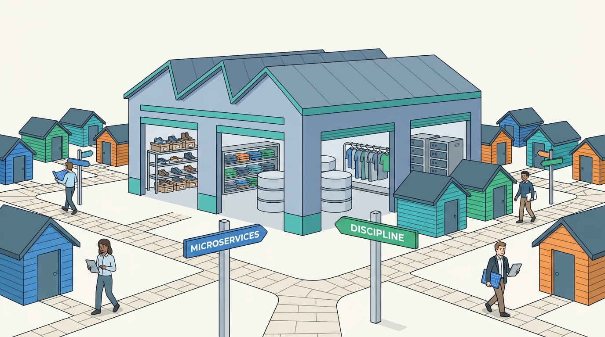

Part XI — PRACTICE: How Others Built It
Case: Zalando, Microservices, Platform Strategy and the Return to Discipline
AI-assisted: researched and written with Claude Code, images generated with the Gemini API. How this works

Image generated by Google Gemini (gemini-3-pro-image-preview)